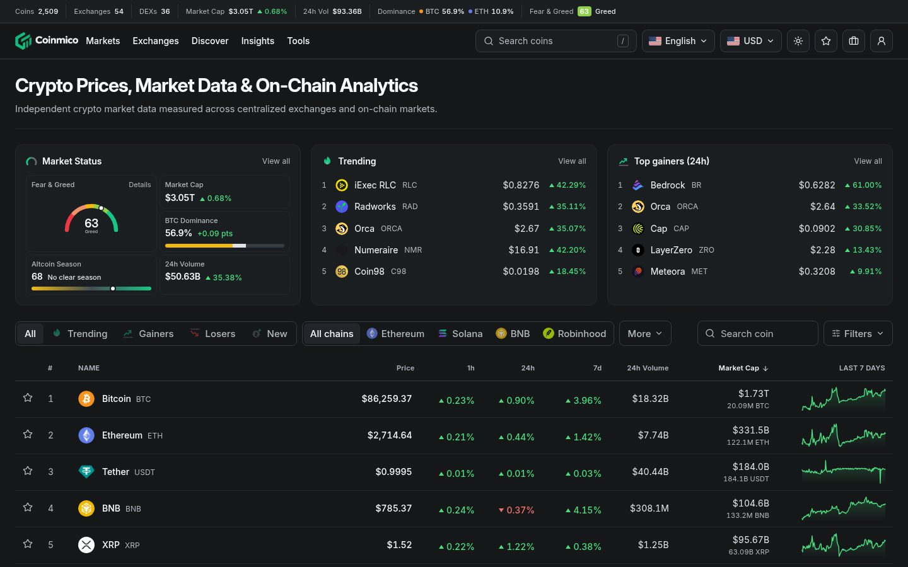
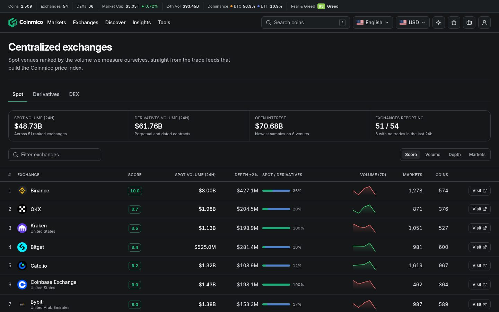
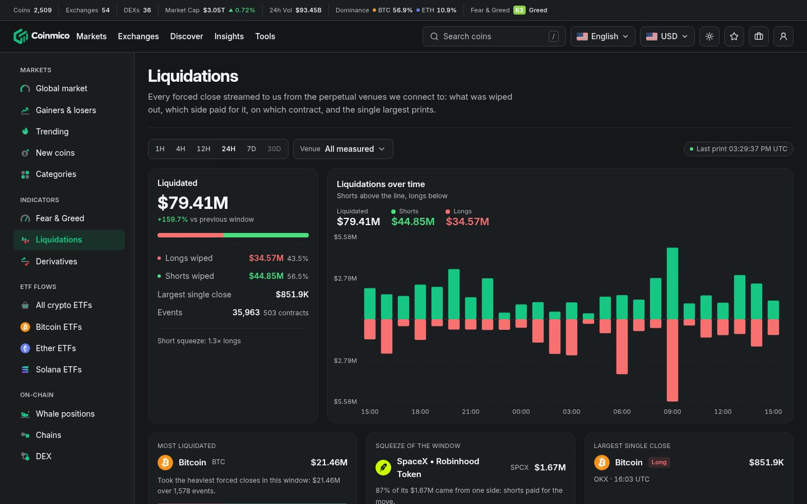
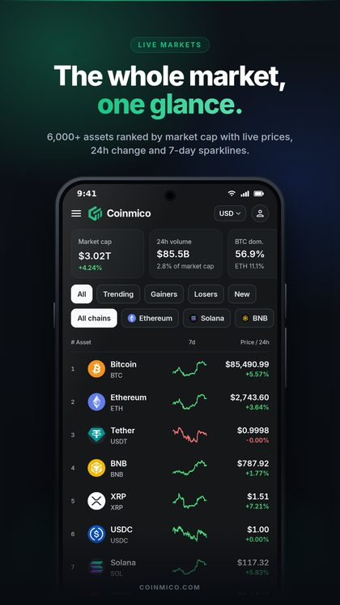
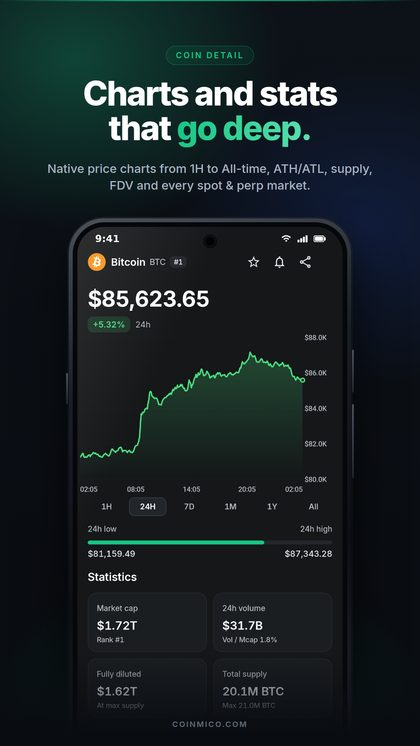
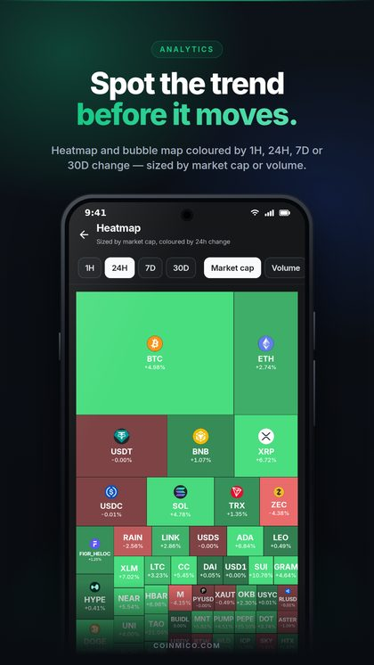

Crypto market data
Independent crypto market data,
measured by us.
Coinmico computes prices, volume, rankings and candles primarily from trades it collects itself, from exchange streams and on-chain pools, rather than copying another aggregator.

Coverage
One index for centralised and on-chain markets.
Coverage as of October 2026. Live counts are published on coinmico.com/about.
Products
Everything you need to read the crypto market.
Every product reads the same store, so the same number appears everywhere on the site.
Prices & market cap
Live prices, rankings, 7-day sparklines and 24h volume for thousands of crypto assets.
Open →Exchange rankings
Centralised exchanges ranked by measured volume, ±2% order-book depth and the Coinmico Score.
Open →DEX analytics
Swap volume decoded straight from pool contracts on the chains we index.
Open →Derivatives & liquidations
Open interest, funding and every forced close streamed from the perpetual venues we connect to.
Open →Whale tracker
Large positions and the money moving behind them.
Open →Fear & Greed Index
A daily sentiment score for the whole market, with history.
Open →How it works
From raw trades to a published price.
Collect
Trade streams from the exchanges we connect to and swap events decoded from the pools we index arrive continuously with their own timestamps.
Clean
Each market is re-measured against its asset's other markets. Outliers, tokenised equities and mistaken token identities are excluded, with the reason recorded.
Settle
Venue windows are volume-weighted, a cross-venue median removes remaining outliers, and the index settles every two seconds with a venue count and confidence.
Publish
Candles, capitalisation, rankings, sentiment and the apps all read that one store.
Exchanges
Venues ranked by what actually traded.
Exchange rankings use the volume we observed on each venue, not the figure a venue reports about itself.
- Coinmico Score built from liquidity, spot volume, clean markets, derivatives transparency and uptime
- ±2% order-book depth sampled on the deepest markets
- Every excluded market listed with the test that removed it

Derivatives
Liquidations as they stream in.
Every forced close from the perpetual venues we connect to: what was wiped out, which side paid for it, on which contract, and the largest single prints.
- Longs vs shorts over 1H to 30D windows
- Open interest and funding sampled per venue
- Spot and perpetual kept in separate buckets

Mobile
Coinmico for Android.
Markets, coin pages, heatmap, watchlist, portfolio and news in a native app, powered by the same index as the website.
The website is available in English, Español, Bahasa Indonesia, 한국어, Türkçe and Tiếng Việt.



What we hold to
Three rules decide what a number is allowed to say.
Measured, not reported
A venue's own volume figure is never displayed as ours. We publish the traded value we observed on that venue.
Labelled where it is not ours
Where a figure is ingested or falls back to another source, the page says so instead of presenting it as our measurement.
Silent where we cannot measure
A window our history does not cover is left empty. Nothing is approximated into a number that reads authoritative.
See the market the way we measure it.
Open the live index, or read exactly how every figure is produced.